AMENTES
Events
Entreprenuership

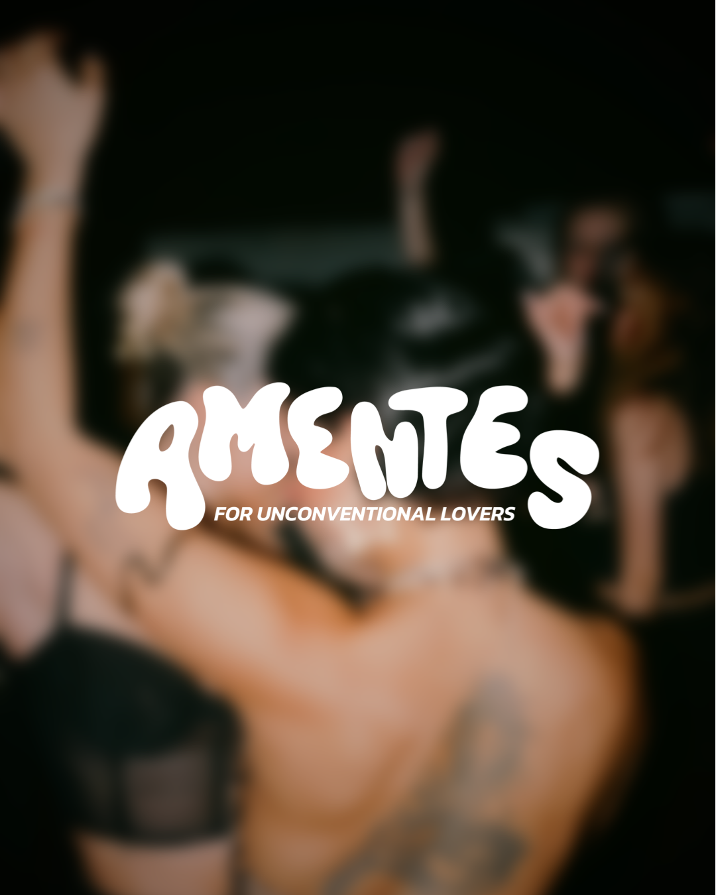
16
Events produced and marketed
900+
Attendes
100k DKK
In tickets sales
01. The Challenge
Copenhagen has an active queer nightlife and event scene, but I felt there was room for more spaces created specifically with the FLINTA community at the centre, particularly spaces where BIPOC representation felt intentional rather than secondary.
At the same time, I wanted to create something that went beyond simply hosting parties. The challenge was to build a space where people could meet, connect and feel part of a community, while still offering events that felt fun, social and visually exciting.
Amentes grew out of that gap: a community-driven event concept where queerness brings people together, without having to be the only thing that defines the experience.
02. Building The Brand
With that foundation, I developed Amentes as a brand that could feel both community-driven and culturally relevant. Rather than building the identity around traditional Pride aesthetics, I wanted Amentes to have its own visual world — playful, expressive and constantly evolving while remaining recognisable across different events and concepts.
The brand is centred around the idea of creating space for unconventional ways of connecting, expressing yourself and loving others. This became the basis for Amentes' tagline, For Unconventional Lovers, and continues to guide the tone of voice, visual direction and event concepts.
Because each event has its own identity, the Amentes brand acts as the thread connecting them. The visual direction can shift from one event to another, while the overall tone, values and approach to community remain consistent.
03. Visual Identity
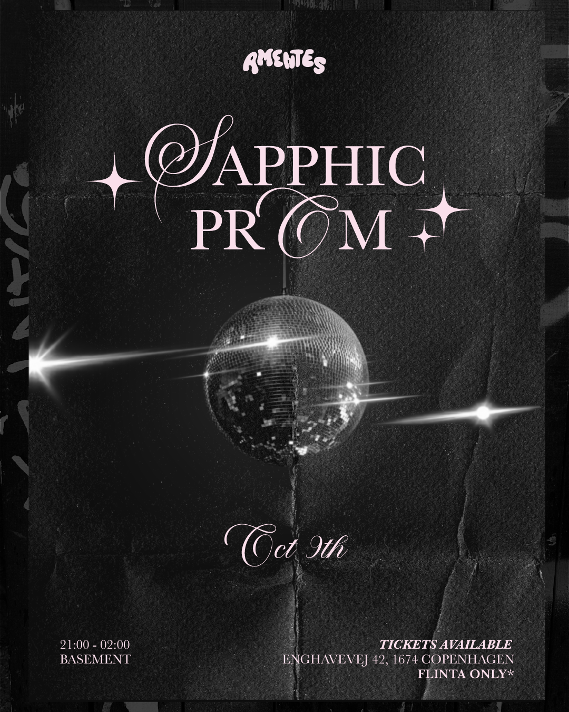
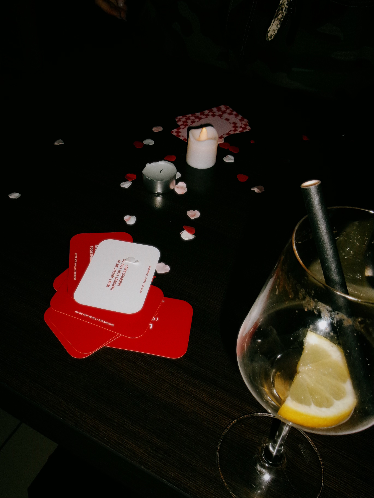
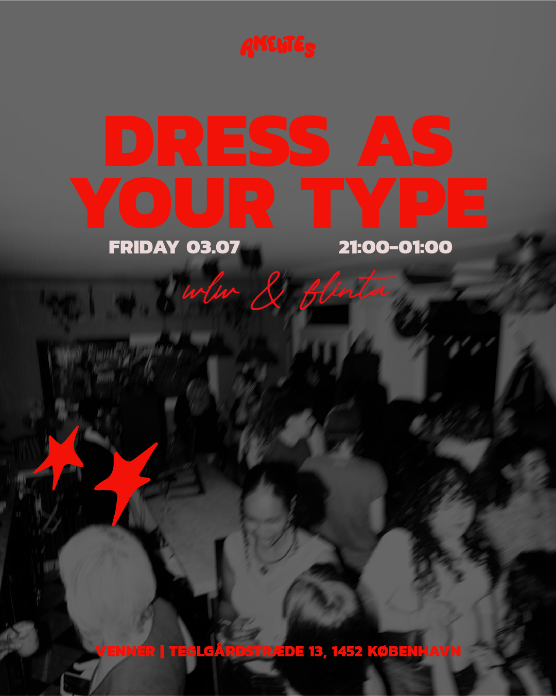
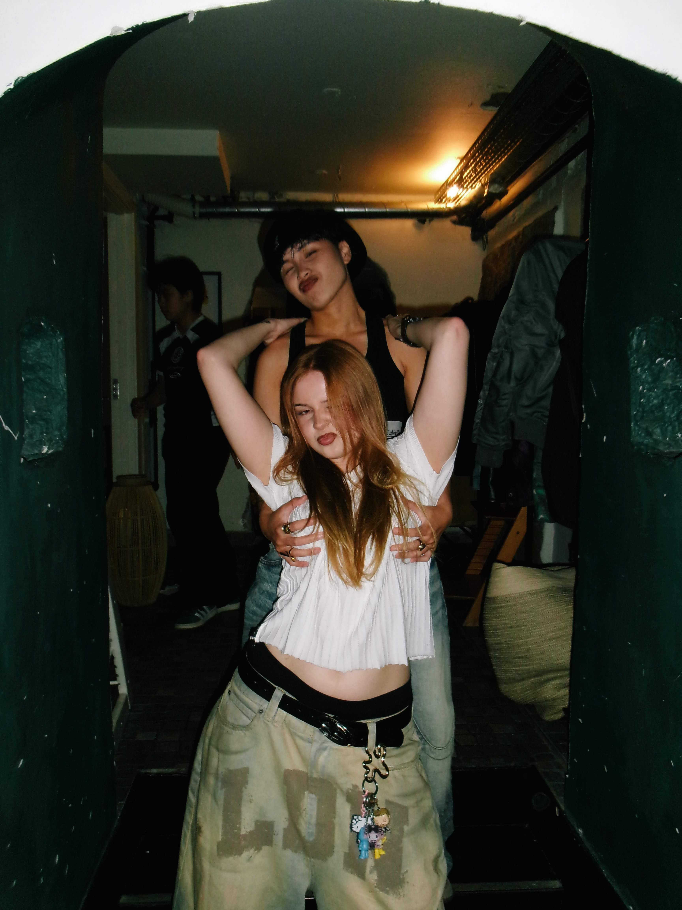
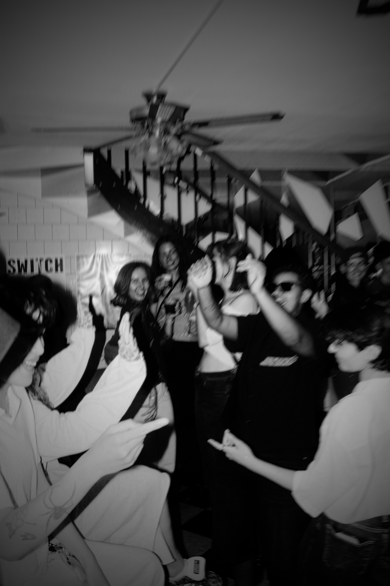
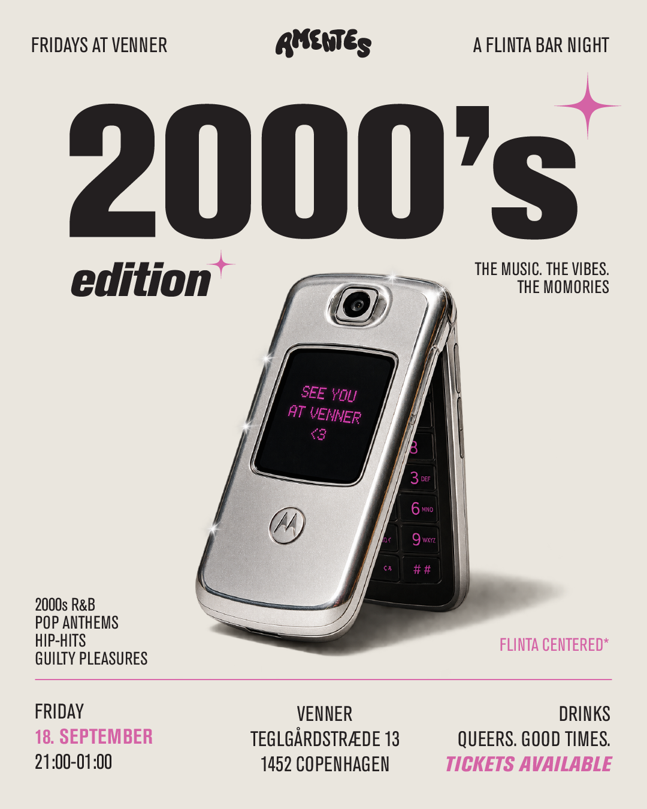
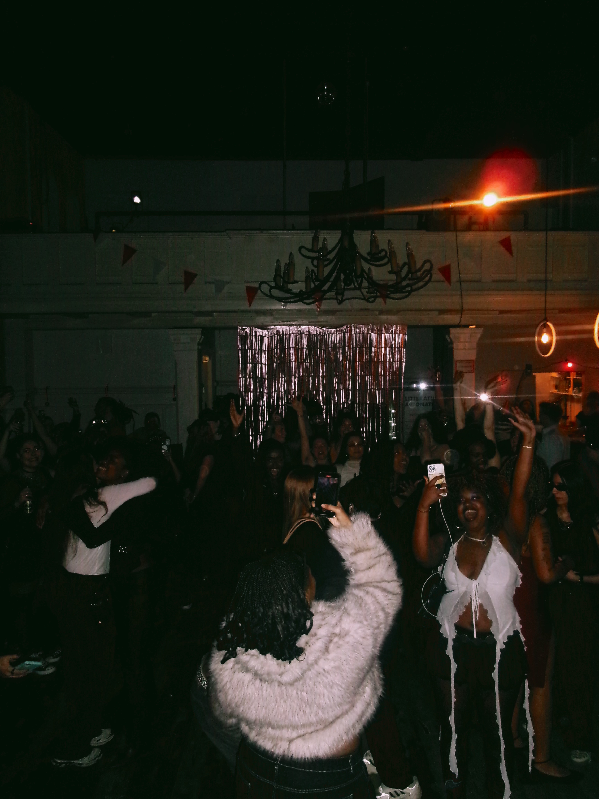
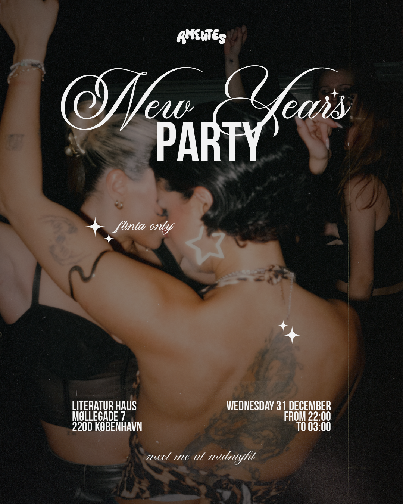
04. Marketing & Campaigns
Here's a look at how an Amentes event goes from initial idea to launch and promotion. For this case, I'm using an event from Fridays at Venner, our recurring series of monthly bar nights hosted at Venner in Copenhagen:
Step 1 - Concept
Each event starts with a concept. I continuously collect idea for themes and formats, which are then developed based on seasonality, relevance, available resources and what feels engaging for the Amentes community. From there, one concept is selected and developed into the direction for the event.
Step 2 - Visual Identity
Once the concept is defined, I develop a visual direction for the event. This includes the key promotional artwork, which establishes the look and feel that carries across the campaign, from the main event poster to social content and the Billetto event page.
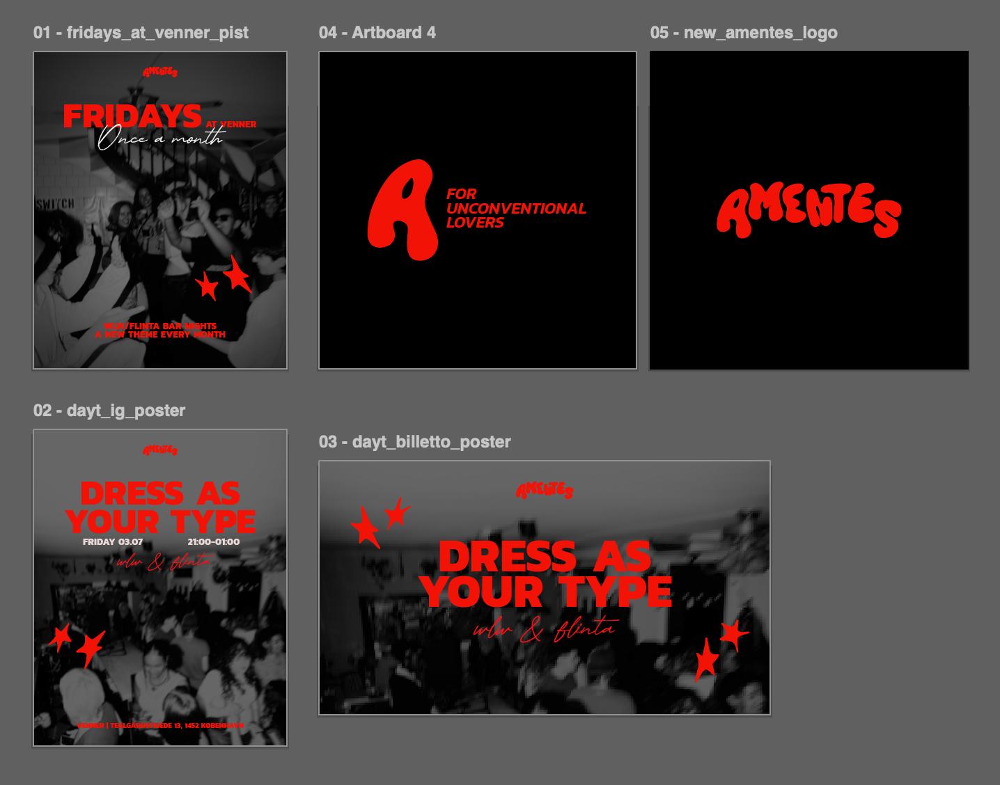
Step 3 - Event launch
The campaign begins with the event launch across Amentes' channels. The main event artwork is published alongside the event description, practical information and ticket link, establishing the concept and visual direction from the first touchpoint.

Step 4 - SoMe content
Between launch and the event date, I create and publish a series of promotional content across Amentes' social channels. Content ranges from graphics and event information to short-form video, with the aim of maintaining visibility, driving ticket sales and building the atmosphere of the event before the event date.

Step 5 - Physical Promo
Alongisde digital marketing, selected events are promoted offline through physical posters placed around Copenhagen. The campaign identity as adapted for the print while maintaining the same visual direction and key event informaiton used across digital channels.
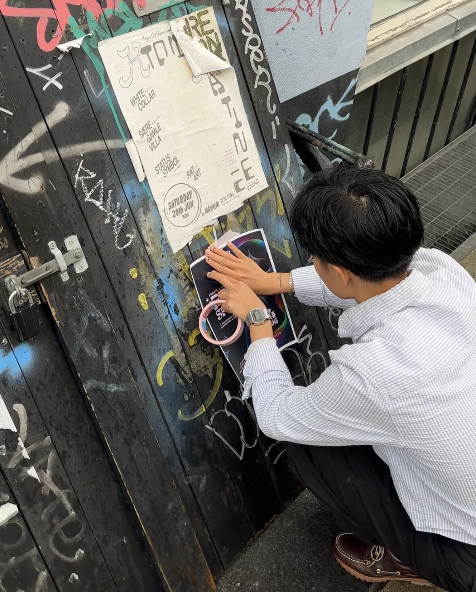
Step 6 - Event
The campaign ultimately leads to the event itself, where the concept moves from digital promotion into physical experience. On the day, I oversee the event execution and ensure that the atmosphere, communication and overall experience reflect what has been presented throughout the campaign.
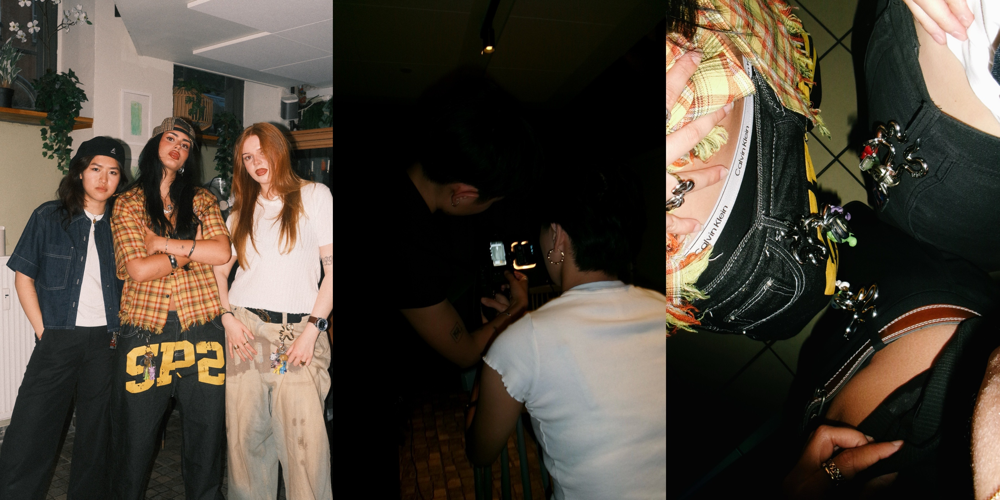
05. Community & Experience
Amentes is build around more than the events themselves. The goal is to create speces where people feel comfortable showing up, connecting with others and becoming part of a recurring community.
This shapes how I approach the entire experience, from the way events are communicated online to the atmosphere and format of the event itself. Rather than focusing solely on entertainment, I consider how each concept can make it easier for guests to interact, whether they arrive with friends or come alone.
By creating a consistent tone, visual identity and experience across events, I aim to build familiarity and trust arounf Amentes as a brand, turning individual events into and ongoing community people want to return to.
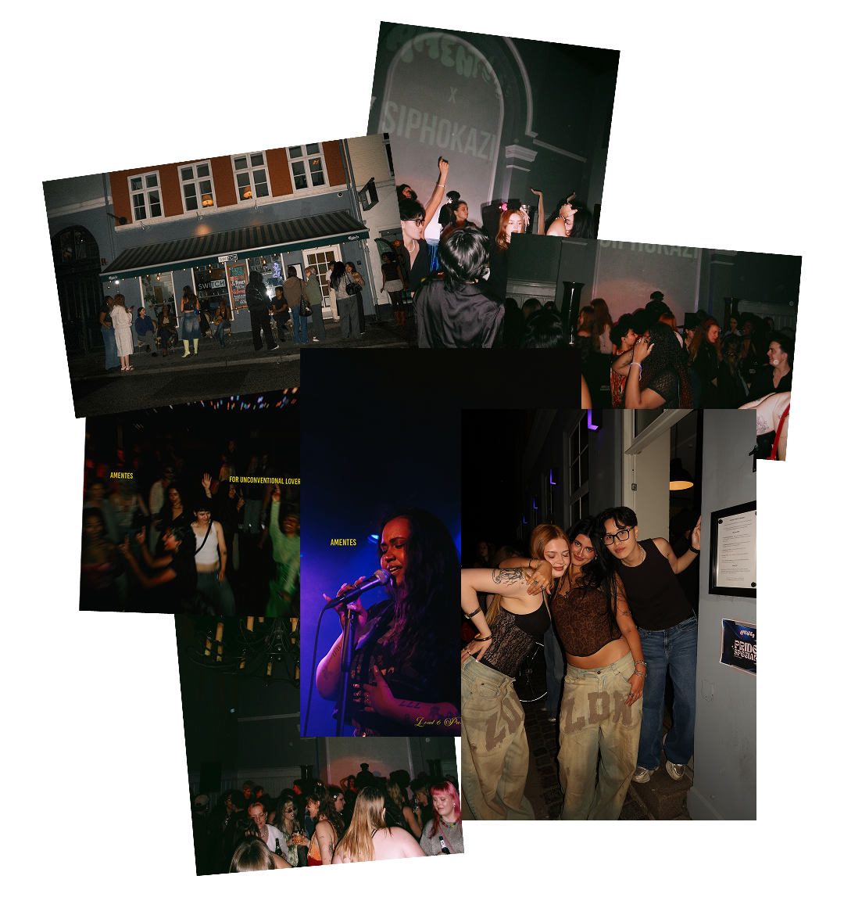

Check it out!
Get a glimpse of what Amentes is all about — the creativity, the energy, the people. Follow us on Instagram and see the magic unfold.
Instagram